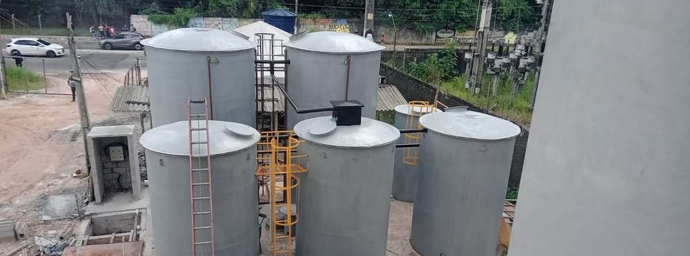

ETERegião metropolitana de Belém
ETE em PRFV para empreendimento
Estação completa com tratamento preliminar e elevatória enterrados, reator UASB, filtro aerado submerso, decantador e desinfecção. Tanques interligados pelo topo, com escadas e guarda-corpo em fibra.
- Projeto conforme ABNT NBR 12209
- Tanques fabricados na fábrica da SANEAR
- Instalação, partida e manutenção